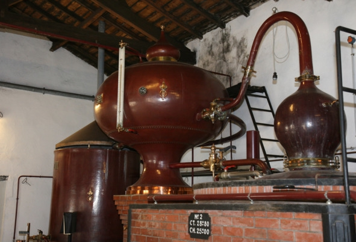

О культуре пития .. Технология производства бренди на примере коньяка..


Процесс состоит из следующих этапов:
1. Выращивание винограда. Для производства коньяка разрешено использовать следующие сорта винограда: Фоль Бланш (Folle Blanch), Уньи Блан (Ugni Blanc) и Коломбар (Colombard). Но в подавляющем большинстве случаев используется Уньи Блан, из которого делают до 98% коньяков. Виноградную лозу сажают рядами на расстоянии трех метров друг от друга. Благодаря этому можно использовать для уборки урожая специальные машины, что сокращает долю ручного труда и удешевляет производство. Сбор урожая начинается в середине октября.
2. Получение сока. Весь собранный виноград сразу же отправляют под специальные прессы, которые только слегка раздавливают ягоды. На законодательном уровне запрещено использовать винтовые прессы непрерывного действия, способные выдавить ягоды насухо.
3. Брожение. Полученный на предыдущем этапе сок отправляют на брожение в емкости объемом 50—200 гектолитров. При этом строго запрещено вносить сахар. Производитель имеет право добавлять в сок только антисептики – антиоксиданты и двуокись серы. Максимальное количество этих веществ тоже регламентируется. Контроль над брожением особенно строгий, поскольку от этого процесса во многом зависит качество готового коньяка.
В результате брожения получают нефильтрованное и неосветленное сухое вино (содержание сахара менее 1 г/л) крепостью 8—9% об., которое до начала дистилляции хранят на собственном дрожжевом отстое.
4. Дистилляция. Коньячный дом обязан завершить дистилляцию до 31 марта года, следующего за годом сбора урожая. При этом выдвигаются следующие требования:
– дистилляция должна осуществляться только в границах определенной географической зоны;
– можно использовать лишь специальные медные перегонные кубы, называемые аламбиками, которые перед применением обязательно регистрируют.

Шарантский аламбик – аппарат для дистилляции коньяка
Дистилляция проводится в два этапа. Сначала вино просто перегоняют с целью отделить спирт от других примесей. Получается жидкость молочного цвета крепостью 27—32% об. На языке производителей это вещество называется brouillis (бруйи).
Целью второй дистилляции является получение чистого коньячного спирта и фракционирование летучих веществ. На данном этапе отсекается начальный выход дистиллята (так называемая «голова»), содержащая много вредных летучих веществ. Далее мастер собирает «тело» – фракцию, содержащую 69—72% спирта, которая пойдет на производство коньяка.
После того как концентрация спирта снижается до 60%, перегонку заканчивают, оставшуюся часть фракции называют «хвостом». В приготовлении коньяка она не используется, но «хвост» разрешено добавлять в следующую партию бруйи. На дистилляцию одной партии коньяка уходит примерно 24 часа. Из 10 литров молодого вина можно получить до 1 литра чистого коньячного спирта.
5. Выдержка. В производстве бочек для коньяка используется только дуб возрастом не менее 80 лет из двух регионов Франции: Лимузена и Тронсе. Процесс выдержки коньячных спиртов длится не менее 30 месяцев, а возраст самых старых напитков может достигать более 100 лет. Бочки разрешено использовать многократно.
За каждый год выдержки испаряется 0,5% спирта, мастера называют это «долей ангелов». На самом деле испарившимся спиртом питаются бактерии, живущие на стенах погребов. За 50 лет выдержки крепость коньяка снижается с 71% до 46%, но сам спирт становится более темным и ароматным.
6. Купажирование (ассамбляж). Подразумевает смешивание спиртов разной выдержки для получения готового напитка, который поступит в продажу. Если дальнейшее старение коньяка нецелесообразно, его переливают в стеклянные емкости.
7. Добавление других ингредиентов. В коньяк добавляют дистиллированную воду для регулировки крепости, сахар (максимум 3,5% от объема) для сладости, дубовую стружку и карамель, чтобы придать насыщенный темный цвет. Напиток разливают в бутылки, наклеивают этикетки, и он поступает в продажу.